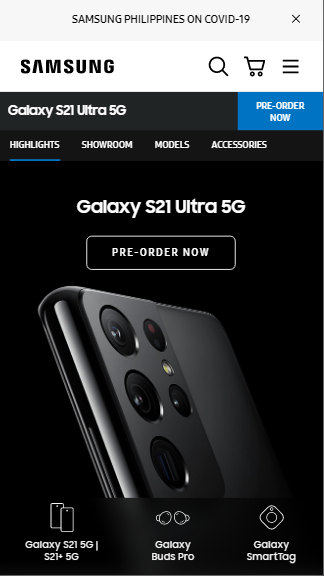

The white background-color with color black head-title: SAMSUNG creates a good contrast for the picture below. The picture u black theme that compliment to the heading. We know that white and black colors are good contrast in the sight of the users.